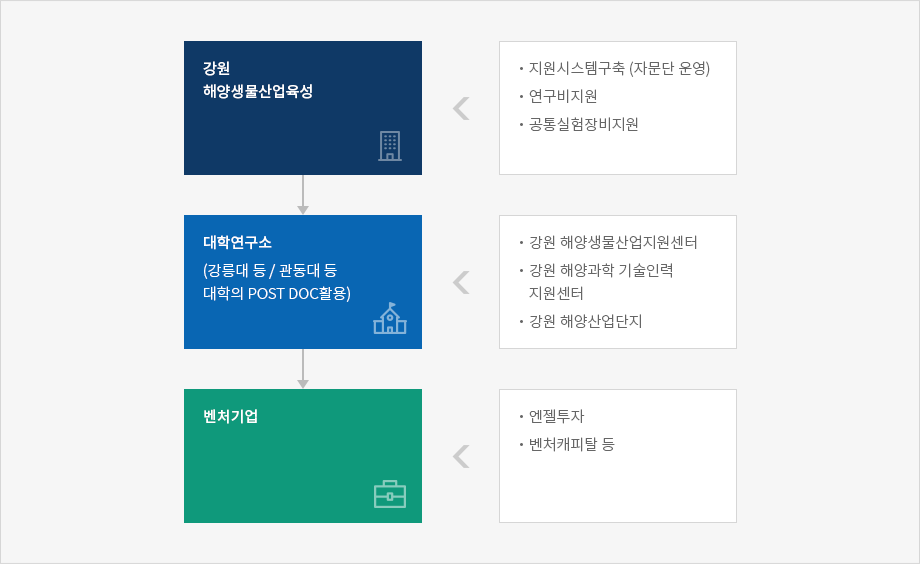

해양생물산업의 특성
-
해양생물산업은 생명공학의 한 부문으로 특정해양 생물의 전부나 일부를 조작 혹은 이용하는 것을 말하며, 그 자체가 학문의 한 분야가 아니라 어떤 문제를 해결하거나 제품 및 공정을 개발하는데 사용될 수 있는 도구나 기술을 의미함.
- 해양생물산업은 해양에 존재하고 있는 원료를 이용하는 것으로 아직까지 많은 연구가 이루어지지 않아 개발과 발전의 가능성이 높으며, 분자유전공학을 이용한 해양미생물, 해양 미세조류, 해양식물 및 해양동물 등에 대한 연구가 활발히 진행되고 있음
강원권의 해양생물산업 현황
- 1998 년 이후 해양생물산업 관련 연구소의 증설로 해양생물에 대한 연구지원기반이 확대되고 있음.
- 강릉대 창업보육센터, 강릉 S/W 지원센터 확대, 강릉대 해양생물산업 연구프로그램 운용, 수산종묘 대량 생산 방류 사업, 강원전문대학 해양생물 프로그램, 강원전문대학 창업보육센터 설치 등이 추진중임
-
강릉대 창업보육센터 및 해양생물산업 연구프로그램
- 동해안 수산업의 발전을 위한 연구기능강화, 동해안 수산연구기관의 협력체제 구축, 새로운 품종개발로 어민들의 수익제고, 지역수산물의 고부가가치화 등을 위해 2005 년까지 동해안해양 생물자원 연구센터를 중심으로 연구프로그램 운용
-
강릉 S/W 지원센터 확대
- 수산 · 해양 생물산업분야와 관련한 신규 창업자에게 기술 및 경영 지원 등을 제공하며, 해양심층수를 이용한 고부가가치 해양생물 생산기법연구, 소파제 및 내파성 가두리 활용방안 연구등을 중점 추진중 (2001-2005)
중앙정부의 해양생물산업 육성방안
-
해양수산부에서 추진하고 있는 해양자원 관련 연구개발은 첨단수산기술개발사업, 수산시험연구사업, 해양생물로부터 유용신물질 연구사업 등 3 개 부문에 걸쳐 시행되고 있음
- 생명공학관련 기술개발연구 (1995 ~ 2004, 245 억), 수산시험연구사업, 유용신물질 연구사업 (1 단계 : 1999 ~ 2001, 14 억원)
-
해양생물산업 인프라구축사업은 정부출연연구소를 중심으로 “ 우리 나라 주요 해양수산자원 보존, 관리시스템,” “ 해양생물유전자 은행 구축사업,” “ 유용 해산어류 자원증대 연구 ” 등의 사업에 1999 년 16 억 8,000 만원의 예산이 투입됨.생명공학관련 기술개발연구 (1995 ~ 2004, 245 억), 수산시험연구사업, 유용신물질 연구사업 (1 단계 : 1999 ~ 2001, 14 억원)
- 해양수산분야 중소 · 벤처기업의 기술개발 및 창업활동을 적극 지원함으로써 해양산업의 발전기반을 확충하며, 특히, 실용화 및 성장가능성이 높은 첨단 지식산업분야를 집중 지원하기 위해 [ 해양수산벤처기획단 ] 을 설치 · 운영할 계획임.
해양생물산업 육성을 위한 필요기능
-
산 · 학 연구협력 증대 : 현재까지 해양산업에 대한 인식이나 투자부족으로 기술개발 수준이 선진국에 비해 미흡한 수준임
- 따라서 산 · 학 연구협력시스템을 효율적으로 운용할 수 있는 프로그램 확충을 통해 효율적인 연구개발시스템을 확립할 필요성이 있음
- 인력 양성 : 해양생물산업이 지속적인 연구역량을 갖추기 위한 연구인력 확보와 재교육 시스템
- 해양생물산업지원센터 : 해양산업관련 일반 기업 및 벤처기업의 양성을 위해 지원시스템
- 해양벤처기업 창업활성화 : 실험실 창업, 분리창업 등 대학 및 기업에서 생물벤처업체를 양성할 수 있는 시스템
강원 해양생물산업 육성전략
-
강원 해양생물산업의 육성을 위해 지난 1998 년 이후 증대하고 있는 연구개발과 관련 부문, 특히 강릉대와 강원도립대, 관동대 등에서 추진하고 있는 창업보육센터, 해양생물산업 관련 연구프로그램 등을 연계하여 발전시킴.

-
강원해양생물산업육성
- 지원시스템구축 (자문단 운영)
- 연구비지원
- 공통실험장비지원
-
대학연구소 - (강릉대 등/관동대 등 대학의 POST DOC활용)
- 강원 해양생물산업지원센터
- 강원 해양과학 기술인력 지원센터
- 강원 해양산업단지
-
벤처기업

-
창업보육센터를 이수한 업체가 해양생물산업지원센터로 입주하여 연구개발기능을 지속적으로 수행할 수 있는 여건을 조성함.
- 해양과학기술인력지원센터의 기능을 활용하여 전문인력 확충하며, 향후 해양생물지원센터에서 성장한 일반기업 및 벤처기업이 입주하여 생산활동을 할 수 있는 공간 및 여건 제공
-
강원지역의 해양산업 유망분야를 살펴보면, 해양생물 (해양생명, 양식, 수산), 해양관련 소프트웨어, 해양환경블록 및 소파제, 해양관련 컨설팅, 해양정보통신, 해양계측용 센서 및 기기, 해양관련 엔지니어링, 해양에너지 (파력에너지, 온도차에너지, 해류에너지), 해수 담수화 관련기술, 연안 Waterfront, 마리나 관련 기술, 해양관광 관련 정보산업, 연안리노베이션 등으로 분류할 수 있음.
- 해양생물 분야중 신기술개발은 의과대를 중심으로 해양생물 관련 연구개발시스템을 구축함.
- 해양생명공학, 수산공학, 양식공학으로 세분하여 강릉권내 대학과 연계 · 해양양식연구 (강릉대), 해양생명연구 (관동대 의대), 수산과학 (강원도립대) 등으로 지역내 대학 활용
-
초기 단계에서 창업보육센터를 이수한 업체가 해양생물산업 지원센터에 입주하여 연구개발 기능을 지속적으로 수행할 수 있는 여건을 조성
- 동시에 해양과학 기술인력 지원센터의 기능을 활용하여 전문인력 확충
- 향후 해양생물지원센터에서 성장한 일반기업 및 벤처기업이 입주하여 생산활동을 할 수 있는 물리적 공간 제공 추진
- 해양산업센터는 해양환경기술, 해양정보통신연구, 해양생명연구, 해양양식연구, 수산과학연구 등 부문별 특화 연구 (센터의 입지 문제는 지역내 여건을 고려하여 심의후 선정)
-
해양생물 공정기기 등과 관련하여 신소재산업과 정보공유 시스템 구축
- 해양생물산업과 신소재산업 (파인세라믹스) 을 강원 동부권의 주력 산업으로 육성함
사업제안
- 해양수산부의 국가적 차원에서의 해양산업육성방안과 연계하여 동해안권에 해양생물벤처센터를 유치하여 해양생물관련 벤처업체를 육성함.
- 해양 생물산업 관련 고급 인력 확보 및 기조 기업 인력의 재교육 등을 통해 고급 인력을 확보할 수 있는 시스템을 구축함.
- 장기적으로 강릉해양생물산업지원센터에서 육성된 기업이 입주할 수 있도록 인근 공업단지 지역 내에 5 ˜ 10 만평 규모의 해양생물산업단지 조성.